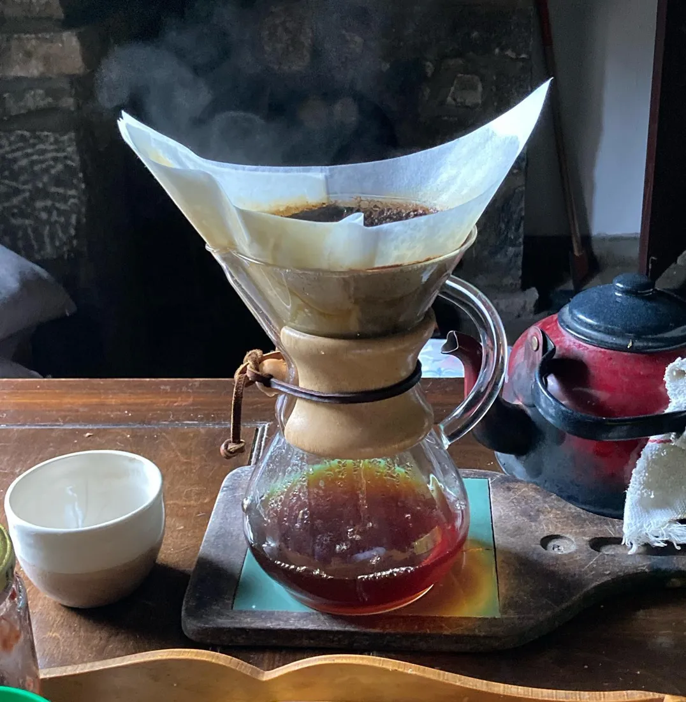
Chemexlimpio y brillante
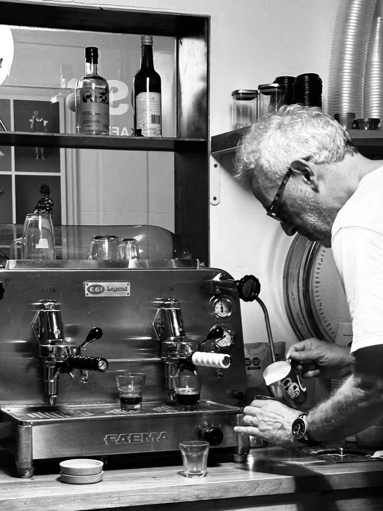
Café de especialidad al paso. Empezó en la ventanilla de un garaje en Belgrano; hoy hay öss en Buenos Aires, Barcelona y Madrid.
Ver sucursales →öss es café para llevar en serio: granos de especialidad, baristas que saben lo que hacen y una ventanilla que da a la vereda. Si tenés tiempo, quedate; si no, te lo llevás en mano.
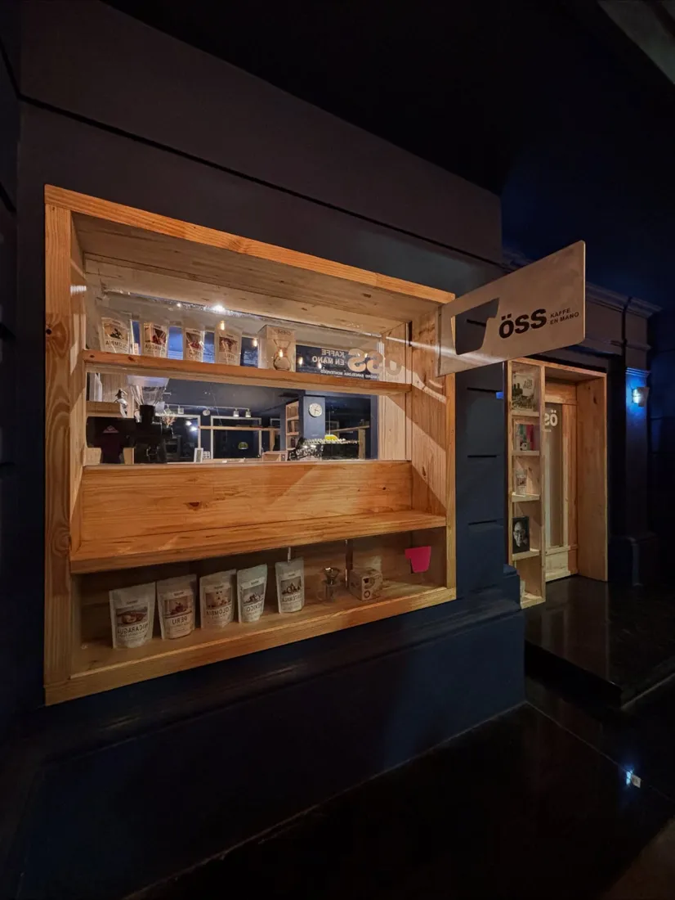
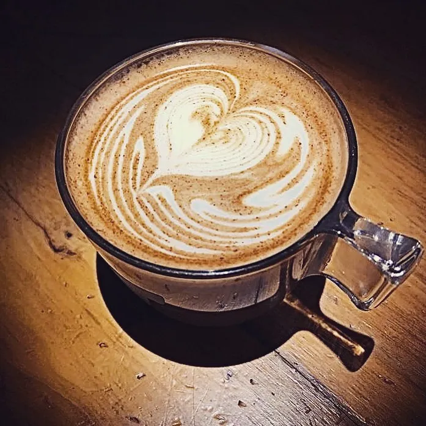
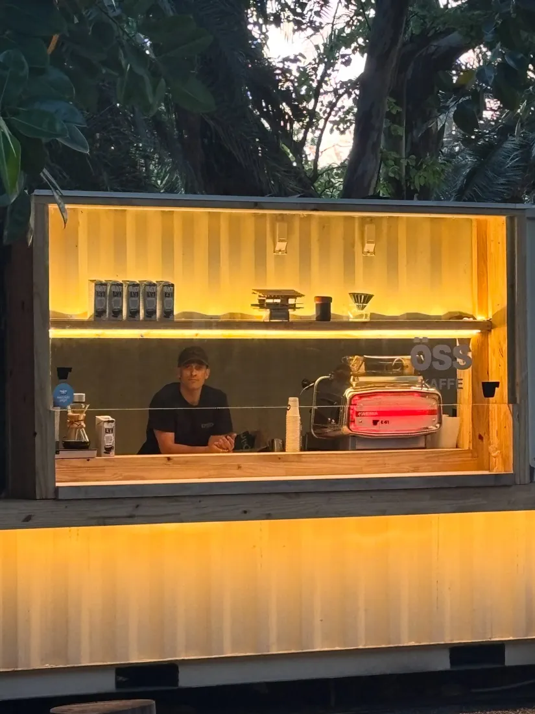
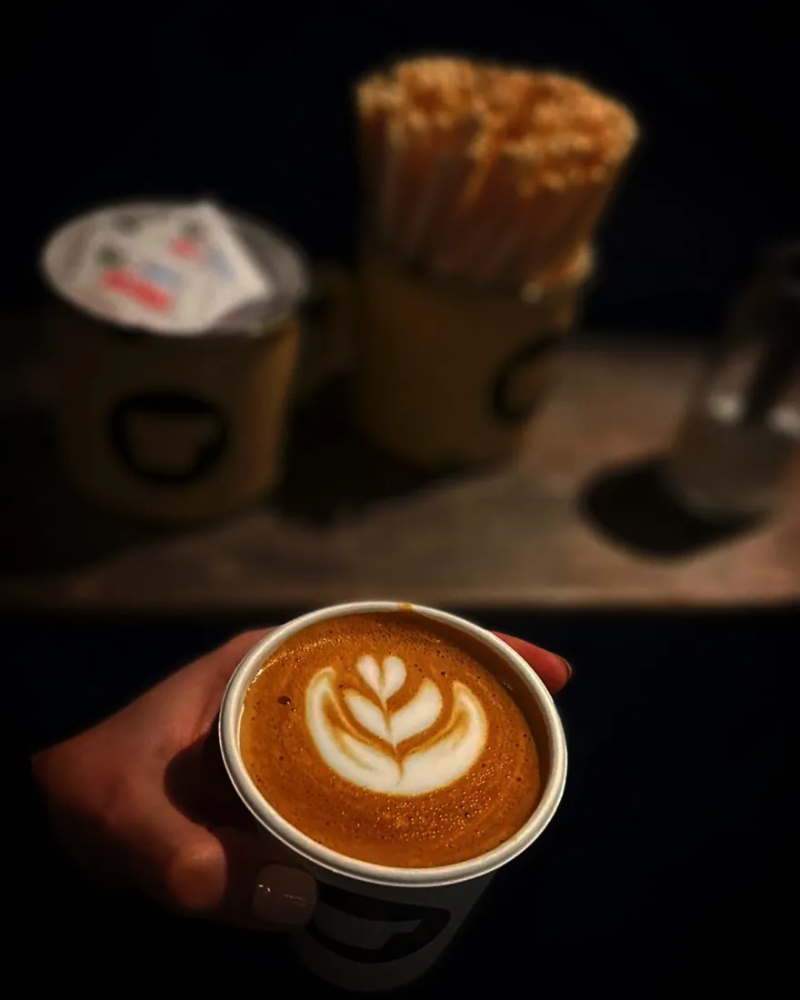
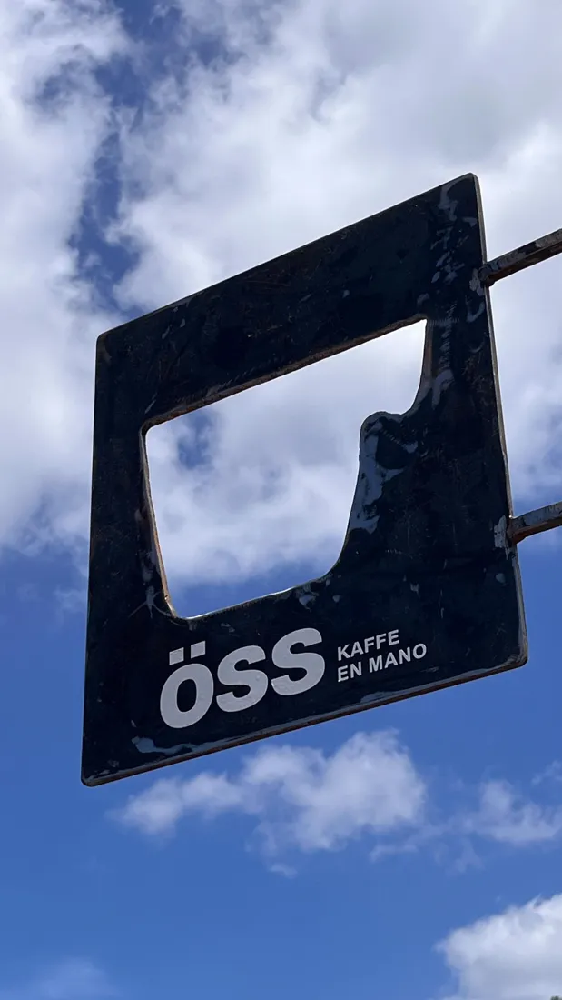
Al paso no quiere decir a las apuradas. Además del espresso, en öss se filtra con distintos métodos. Preguntá qué grano hay ese día.

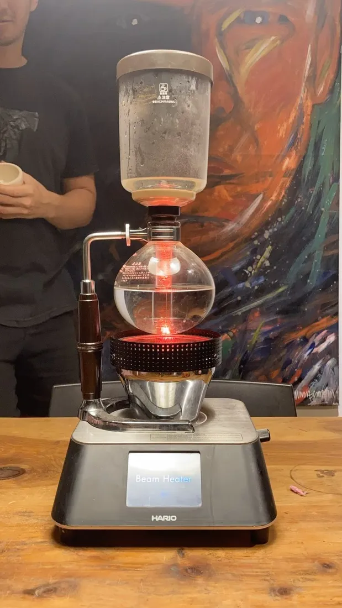
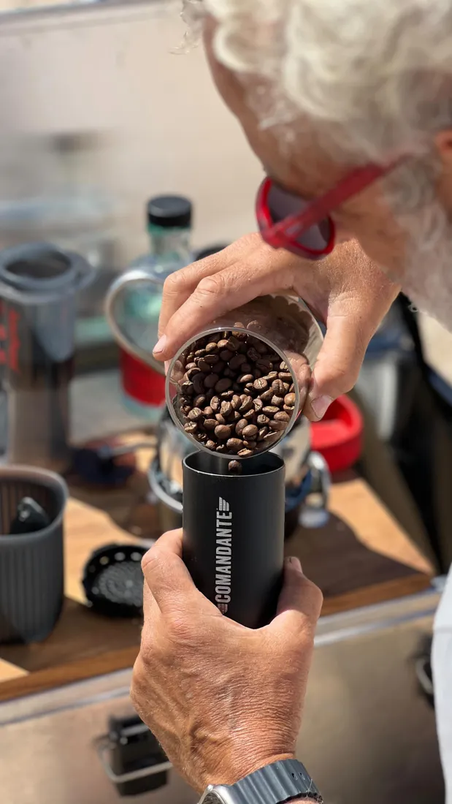
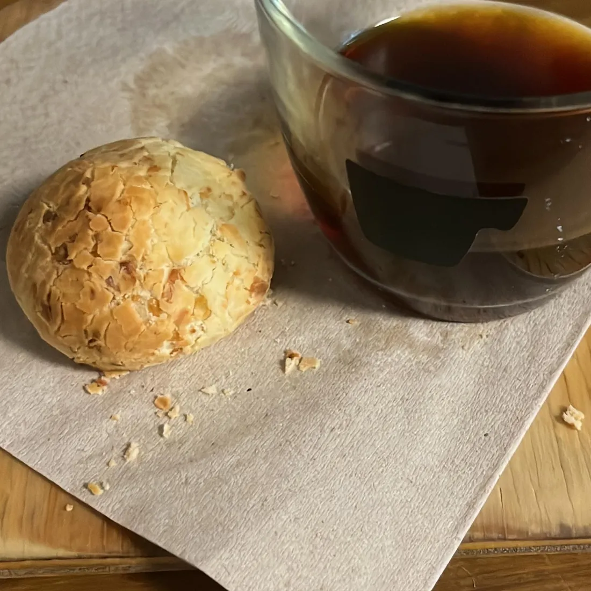
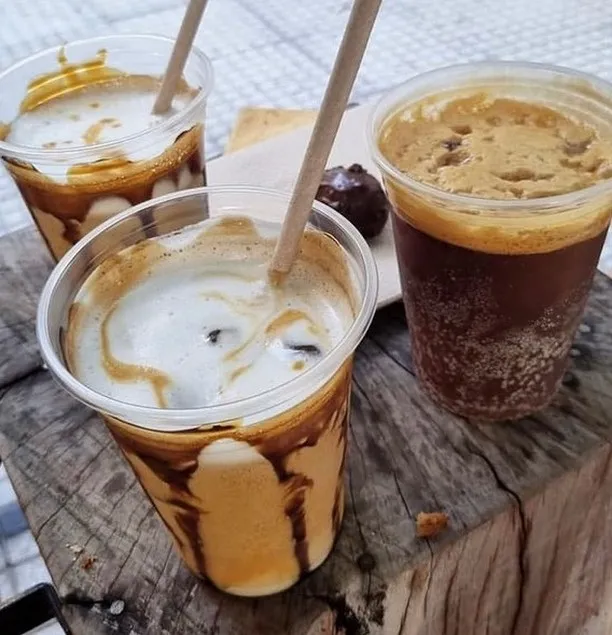
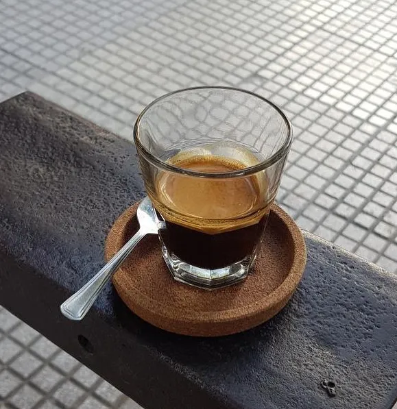
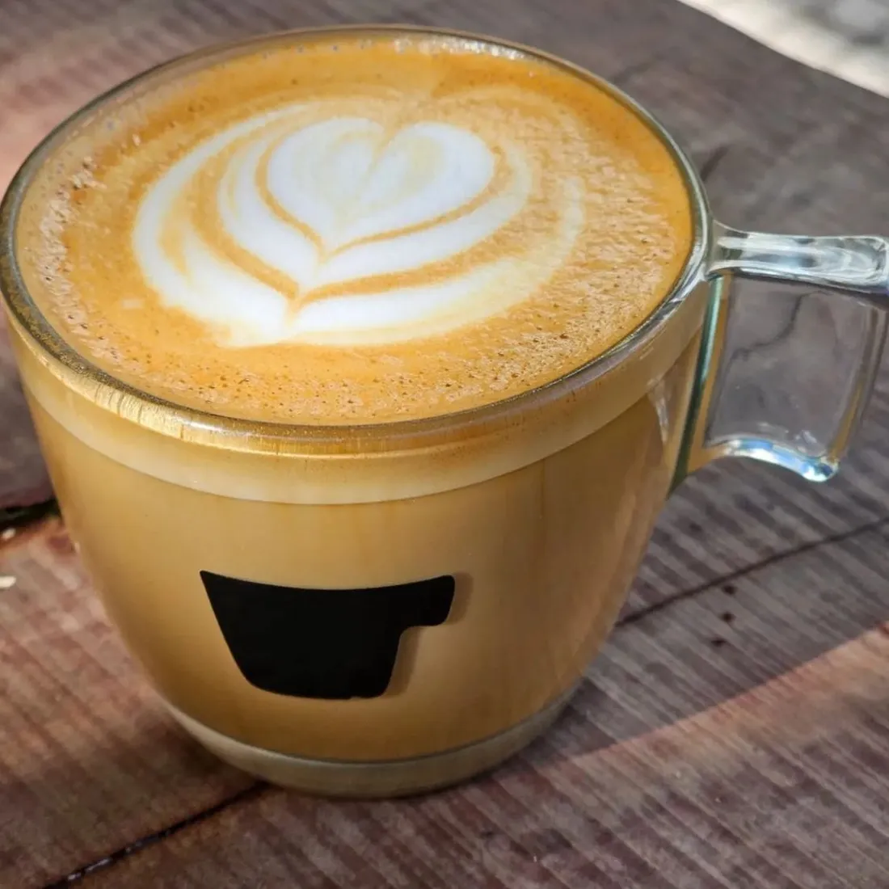
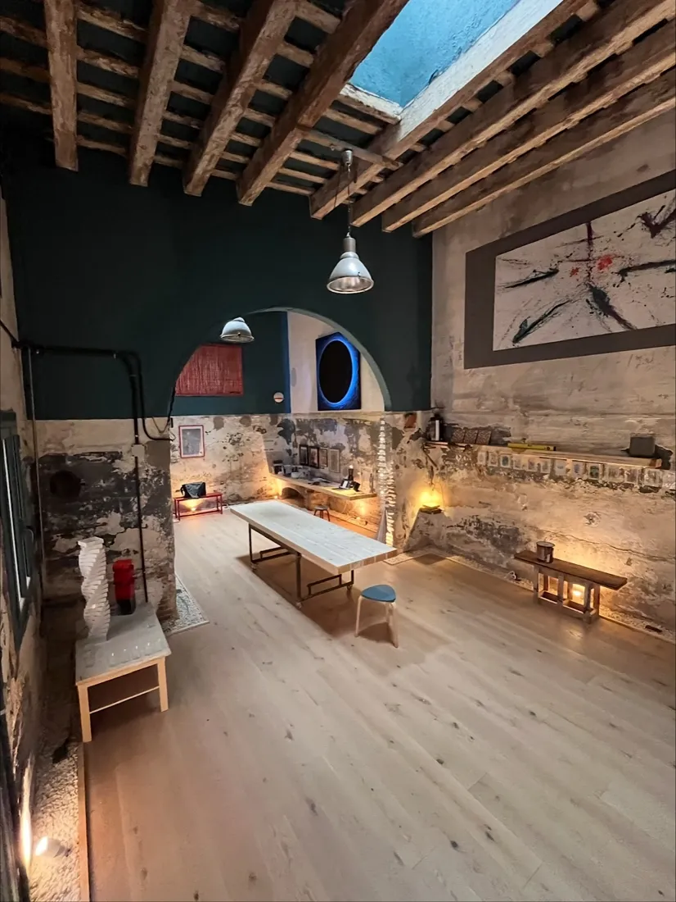
En vaso, con tapa, café en mano.
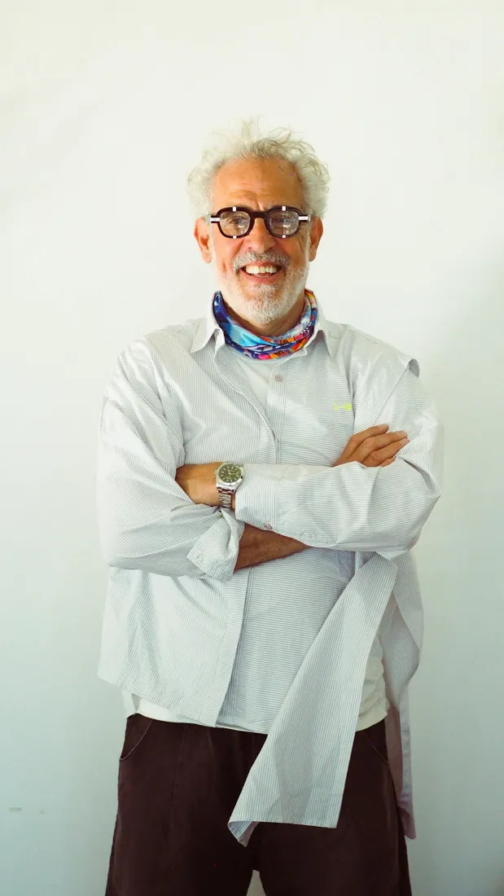
Fernando Iglesias Molli es arquitecto. En un viaje a Oslo descubrió el café de especialidad y se lo trajo puesto. De vuelta en Buenos Aires, convirtió el garaje de su casa en Belgrano en una cafetería con ventanilla a la vereda.
El garaje se volvió punto de encuentro del barrio: vecinos, música, charla y café en mano. Después vinieron otras sucursales en la ciudad, y también Barcelona y Madrid.
Cursos, talleres, catas y noches raras. La ventanilla también es un punto de encuentro.